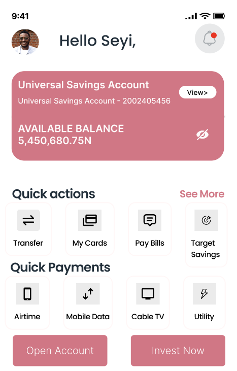
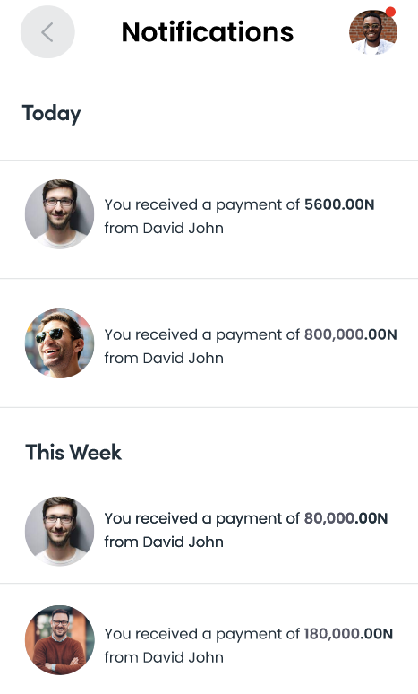

Case study
Fintech mobile app
A mobile banking concept designed around a clear, convenient experience, from first-time onboarding to everyday transactions.
Features
- Onboarding screens that introduce the appOnboarding
- Sign-in, login and PIN creationSecurity
- Dashboard with quick actions and account informationHome
- Payments for bills, airtime and dataPayments
- Bank transfer flowPayments
- Notifications and virtual and physical card featuresCards
- Interactive prototype with overlays, dissolve and ease-in/ease-out transitions to simulate real user flowsPrototype
About the project
This project explores the design of a fintech mobile application. The work included setting a visual direction, defining typography and colours, creating a logo, designing the key screens and connecting them in a prototype. I designed it during my internship at Parallex Bank, where I also documented user journeys so the programming team could understand each task. The experience was planned so common banking actions are easy to find and finish.
The problem I solved
Financial apps pack in many important tasks: checking balances, transferring money, paying for services. When those actions are hard to find or the steps are unclear, people get frustrated. I focused on organising the main actions into one clear mobile flow.
The screens

All the screens and the interactive prototype are in my Figma file. Open in Figma
Technologies used
- Figma
- Prototyping
- Visual hierarchy
- Typography and colour
- User-flow planning
What I learned
A good interface is not only about how a screen looks. It is about how clearly it helps someone complete a task.